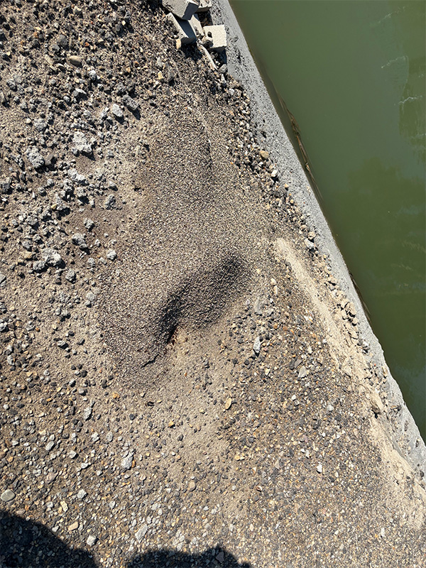

Pogonomyrmex occidentalis-Western Harvester Ant
Species overview:
Pogonomyrmex occidentalis or the Western Harvester Ant is a medium sized red harvester ant without majors. They are commonly found in desert areas such as Utah, Nevada, and Arizona.
Good to know:
Here is some good to know info about the species!
Scientific name and common name:
Pogonomyrmex occidentalis-Western Harvester Ant
Native or invasive to Utah:
Pogonomyrmex occidentalis is native
Are they Polygynous:
Pogonomyrmex occidentalis is not
Do the larva spin cocoons or stay naked:
Pogonomyrmex occidentalis larva stay naked
Are they claustral or semi-claustral:
Pogonomyrmex occidentalis is kind of both since sometimes after the queen digs her claustral chamber she will go get a few insect parts and seeds, but not always.
Nest Behavior:
Pogonomyrmex occidentalis nests in soil. They create mounds of small pebbles and rocks outside there nest entrance. It is unknown why they do this. These small mounds can be long and flat or tall and thin. Most colonies remove all small vegetation from there rock mounds and surrounding area, which makes there nests easy to spot. Nearby the rock mounds there are usually a pile of discarded seed husks.
What do they eat:
Pogonomyrmex occidentalis eats mainly seeds which they harvest when available and keep in there nests. They crush the seeds into an "ant bread" which the queen, workers, and there larva eat. They also eat small insects and rarely other ants.
Founding time and behavior:
Pogonomyrmex occidentalis flies in August and September. Once queens mate with sometimes multiple males they break off there wings and begin wandering around looking for a good place to dig there claustral chamber. The claustral chamber is easily identified by the C shape of the excavated soil outside the entrance. Queens usually lay 3-15 eggs to start but end up eating most of them. The worker development takes around 5-8 weeks from egg to adult worker. The queens have enough muscle tissue for there first generation but tend to leave there founding chamber to look for a few seeds and insect parts to help with development. Pogonomyrmex occidentalis does not have majors, but some Pogonomyrmex species do. Wild colonies can get populations in the upper 8000-10000's. Smaller colonies have been known to move into abandoned or dead Pogonomyrmex occidentalis nests as well. Colonies can have long trails of workers foraging for seeds and carrying them back to the nest. Alates tend to appear after 3-6 years since colonies can grow so fast.
A Pogonomyrmex occidentalis dealate queen digging her claustral chamber in sandy soil:
Pogonomyrmex occidentalis queen alates outside of the nest early in the morning:
Pogonomyrmex occidentalis workers outside of the nest:
A Pogonomyrmex occidentalis male:

Pogonomyrmex occidentalis nest entrances:

Pogonomyrmex occidentalis claustral chamber entrances:
Personal colonies section will be added soon! It's currently in the works!